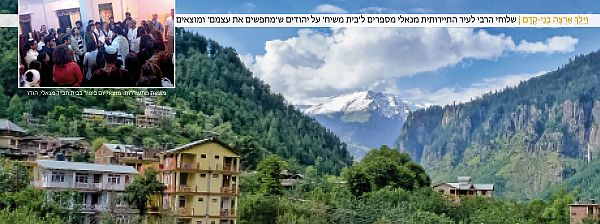

יעקב שץ
ברחובותיה של מנאלי, עיר תיירותית קסומה בצפון הרחוק של הודו, מטיילים המוני יהודים וישראלים ביניהם גם נשמות שהגיעו ‘לחפש את עצמם’ ולמצוא משמעות עמוקה לחייהם. צמד השלוחים הרב יעקב שץ והרב שניאור פוגאטש ונשותיהם פועלים במקום כשהם חדורי תחושת שליחות עמוקה • רק לאחרונה סיימו לבנות בניין גדול לבית חב”ד, הכ
ברחובותיה של מנאלי, עיר תיירותית קסומה בצפון הרחוק של הודו, מטיילים המוני יהודים וישראלים ביניהם גם נשמות שהגיעו ‘לחפש את עצמם’ ולמצוא משמעות עמוקה לחייהם. צמד השלוחים הרב יעקב שץ והרב שניאור פוגאטש ונשותיהם פועלים במקום כשהם חדורי תחושת שליחות עמוקה • רק לאחרונה סיימו לבנות בניין גדול לבית חב”ד, הכולל גם מקווה מפואר

בעבר היתה מנאלי, המוקפת בהרי ההימאליה הירוקים, מקום שקט ופסטורלי, אולם בשנים האחרונות, הפכה לעיר מתויירת וממוסחרת. בקיץ מבקרים בה אלפי מטיילים, אך בחורף, בשל תנאי מזג האוויר הקשים, יוותרו בה רק תושבי העיר, בעיקר העניים שאוגרים במהלך הקיץ מזון ועצי הסקה. השלגים נערמים במנאלי לעתים אף לגובה של שני מטר והקור הוא עז.
זו הסיבה שבית חב”ד בעיר אינו פועל כל ימות השנה, אלא מתאים עצמו לעונות התיירות - כאשר העונה מתחילה בתקופה שלפני חג פסח ומסתיימת כשבועיים לאחר חודש החגים. כמו בערים אחרות בהודו, עבודה זרה נמצאת בעיר למכביר אך כמעט ולא קיימים בה מרכזי טומאה כמו בערים אחרות. עיר זו מהווה בעיקר נקודת מוצא לטראקים מסוכנים בנופיה הקסומים של הרי ההימאליה המקיפים את העיר, או לחילופין, פופולארית בקרב אנשים שמבקשים לעצמם מנוחה ומרגוע.
חלקה העתיק של מנאלי בנוי במעלה ההר ושוהים בה מאות רבות של מטיילים ישראלים מדי קיץ. באזור זה ניתן למצוא מסעדות, גסטהאוסים לצד דוכני שרוואלים, חולצות, תיקים, שאלים, צעיפים, לונגים, עבודות יד לתיירים. הבולט מכולם הוא בית חב”ד - בניין בן שלוש קומות מפואר ויפה ובו אולם אירועים המכיל כמאתיים מקומות ישיבה, מסעדה כשרה, בית כנסת מהודר, מקווה, ספריה ובית מגורים עבור השלוחים.
בית חב”ד במנאלי הוא מהמפוארים והגדולים בבתי חב”ד בהודו ובמזרח, פנינה אמיתית של פעילות יהודית אינטנסיבית מסביב לשעון.
“עד היום אני לא יודע איך זה קרה”, מתוודה אחד השלוחים בעיר הרב יעקב שץ ברצינות, “הרבי רצה מקווה, חיפשנו מקום נאות לבנות מקווה ומצאנו שלד של בניין בן שלוש קומות. בהשגחה פרטית קרם המקום עור וגידים והפך למבנה מפואר ורחב ידיים. כמעט ואין מטייל יהודי או ישראלי שיגיע לעיר ולא ייחשף לפעילות החב”דית”.
בית חב”ד ברוב ימות השנה
זה חמש שנים שבעיר פועלים צמד השלוחים הרב יעקב שץ והרב שניאור פוגאטש. השניים יסדו פעילות בעיר מהמסד ועד הטפחות. בעבר כבר פעל בעיר בית חב”ד בהנהלתו של הרב ברוך שנהב ושני האברכים הצעירים, הדינמיים והנמרצים החזירו עטרה ליושנה והוסיפו והעצימו את הפעילות.
“לפני שש שנים הגענו לשליחות בהודו במסגרת ‘מרכז שליחות’ אחרי שנת ה’קבוצה’. הייתי אני עצמי תקופה ברישקש ולאחר מכן נדדתי לקסול שם נמצאים בשליחות הרב יואל כפלין והרב דני וינדרבאום.
“קאסול אף היא ממוקמת בצפון הודו. שוב ושוב שמענו ממטיילים כמה חבל שאין בית חב”ד במנאלי בה נמצא ריכוז גדול של מטיילים ישראלים. הנושא עלה פעמים רבות עד שבהזדמנות אחת החלטנו לעשות מעשה. חשבנו שבעונה הראשונה לפחות נדאג ליהודים שמגיעים למנאלי לאוכל כשר, הרבה מאוד יהודים שומרי מסורת מגיעים להודו בשנים האחרונות וההחלטה הייתה ששנינו נצא לפתוח מסעדה כשרה בעיר, ותוך כדי כך לבחון העמקת הפעילות בעיר.
“בעזרתם של השלוחים בקאסול שכרנו מבנה קטן במנאלי ששימש בעבר כמכולת. את העופות הינו מביאים מקסול; ספרי קודש כמעט ולא היו לנו, ולאחר כמה ימים של התארגנות הכרזנו על פתיחת המסעדה. צעירים רבים פקדו את המקום אלא שהם לא הסתפקו באוכל, ומהר מאד התרחבה היריעה לשיחות על אמונה, שיחות שנמשכו עמוק אל תוך הלילה.
“בשבתות היינו מארגנים סעודות שבת, ולמקום שהיה אמור להכיל חמישים איש, נכנסו מאה ויותר. היו שבתות שעשרות ישבו בחוץ וחיכו שיתפנה מקום. ההיכרות עם המטיילים הולידה שיעור קבוע בספר התניא ובשיחותיו של הרבי. הבנו אפוא שיש צורך דחוף בפעילות יהודית ענפה וקבועה בעיר”.
לקראת העונה הבאה הכינו השלוחים את עצמם לפתיחת בית חב”ד קבוע. “כתבנו לרבי והרבי כתב על חנוכת הבית ובירך שיהיה בהצלחה ובהרחבה דווקא. כך יצאנו לעיר והתחלנו לחפש אחר מבנה מתאים שיהווה בית חב”ד קבוע. לאחר כמה ימים של חיפושים לצד משאים ומתנים מפרכים, מצאנו מבנה גדול בן שלוש קומות שהיה בנוי כשלד ללא קירות. בעל הבית הסכים להשכיר לנו את המקום לתקופה ארוכה בתנאי שהשיפוץ יהיה על חשבוננו”.
“אלוקים כנראה אוהב אתכם”
פעילות בית חב”ד במנאלי, כמו בכל רחבי תת היבשת, מתחלקת לדידם של השלוחים לשני מישורים מרכזיים, גשמי ורוחני. “ברובד הראשון אנחנו מספקים ליהודים אוכל כשר, מסייעים בחילוצים של נפגעים או רח”ל נפטרים, עוזרים פיזית לאנשים שחלו. יש לנו קשרים טובים עם אנשי המשטרה ואנו מסייעים לישראלים שהסתבכו. הרובד השני הוא הרוחני יותר, באמצעות שיעורי תורה קבועים בחסידות ובהלכה, שיחות ‘אחד על אחד’ וכמובן מקווה טהרה ותפילות מתי שיש מניין ובשבתות”.
עמיתו לשליחות, הרב פוגאטש, מספר על השגחות פרטיות נפלאות שמלוות אותם בדרכם בכל צעד ושעל. “כשהגענו לעיר, כתבנו לרבי על המבנה שבכוונתנו לשכור. תשובת הרבי עסקה בצורך לבנות מקווה. החלטנו אפוא שהמקום שנחפש יהיה רק כזה שנוכל לבנות בו גם מקווה טהרה. לאחר ששכרנו את המקום, יצרנו קשר עם הרב בועז לרנר, מומחה למקוואות, והוא הנחה אותנו איך להתחיל בבניית המקווה. אמנם לא היה לנו את הכסף לזה אך הלכנו באופן של ‘לכתחילה אריבער’.
“כעבור כמה ימים התקשר אלי יהודי אמיד ממנהטן שהכרתי במהלך שנת ‘קבוצה’. הוא התקרב מאוד ליהדות ופעם בחודש עשה לעצמו מנהג להגיע ל–770 לכתוב לרבי באמצעות ה’אגרות קודש’ ועל פי התשובה הוא מחלק את מעשרותיו. הוא מספר לי שזה עתה כתב לרבי והתשובה של הרבי הייתה על מקווה, ואין לו מושג לאיזה מקווה עליו לתרום, מפני שיש הרבה מקוואות.
“לא האמנתי למשמע אוזניי. סיפרתי לו כמובן איפה אני נמצא ועל התשובה שקיבלנו מהרבי על אודות בניית מקווה. כך התרומה הראשונה למקווה, סכום גבוה מאד, הגיעה מהר מהצפוי. הרגשנו שהרבי רוצה מקווה והרבי גם דואג שיהיה לנו מימון.
“בפועל, בתוך שנה וחצי המקווה עמד על תילו והתחיל לפעול. יחד איתו נבנו גם שארי חלקי בית חב”ד. הבנייה עצמה לקחה שנה אך במהלכה היתה עוד השגחה פרטית מופלאה.
“במהלך החורף כשהיינו בארץ ישראל, ערכנו הסכם עם הקבלן שהוא מתחיל לבנות, וכל חלק שהוא בונה, הוא שולח לנו תמונות לאישור, ואנחנו שולחים לו את הסכום הנדרש. הערכנו שעד סוף החורף יסיים את העבודה. כידוע, להודו יש קצב משלה, וכשהגענו בקיץ הבנייה הייתה עדיין בעיצומה. מצאנו את עצמנו מפקחים בעצמנו על הבנייה. בינתיים החלו לשוב לעיר בעלי העסקים שהחלו לפתוח את עסקיהם לקראת עונת התיירות, והללו כעסו שאנו מפריעים להם שכן מדובר על מבנה גדול שחסם חלק מהנוף. הם עשו לנו הרבה בעיות, לא נתנו למשאיות להיכנס לאזור הבניה, איימו על עובדים. הם טענו שזה מפריע לתיירים להיכנס אליהם. אבל אנחנו לא התפעלנו והמשכנו עד שסיימנו את הבנייה או אז קיימנו חנוכת הבית גדולה.
“באמצע ההתוועדות נכנס אחד השכנים שהתנגד לבנייה ואמר לנו בגילוי לב: ‘אלוקים כנראה אוהב אתכם. סיימתם בדיוק ביום שלפי החוק ממנו ואילך אסור לבנות’. אנחנו כלל לא ידענו מכך, ואם היינו ממשיכים לבנות, היינו צפויים לקנס גבוה מאוד. הם ייחלו בלבם שלא נסיים עד הזמן הקצוב, ואז יוכלו להצר את צעדנו - אך נכשלו”.
ההשגחה העליונה פועלת יותר במקומות השפלים
מה שמאפיין את הפעילות במנאלי, כמו גם בכל המזרח הרחוק, הם סיפורי הנשמות וההשגחות פרטיות המפעימות שנדמה שמתרחשות דווקא שם, במקום הכי שפל מבחינה רוחנית, אך שם דווקא נראית יד ההשגחה העליונה בשיא העוצמה.
“היה במנאלי בחור נחמד בשם רז, קיבוצניק מצפון הארץ. הוא היה טיפוס שקט ושהה בעיר כמה חודשים טובים”, נזכר הרב שץ. “הייתי פוגש אותו הרבה ברחוב, בין היתר ראיתי אותו עומד ממש מול בית חב”ד, אך תמיד סרב להצעתנו בנחרצות.
“תקופה מסוימת שמתי לב שאותו בחור מגיע מדי יום ונעמד מול חזית בית חב”ד ומביט דקות ארוכות על תמונתו של הרבי, ולאחר מכן ממשיך לדרכו. פעם אחת החלטתי להית ישיר ושאלתי אותו ‘רז, למה אתה מביט כך על התמונה?’ הוא ענה: ‘תראה אני אדם לא דתי, חונכתי לשנוא דתיים, אך מראהו של הרבי שלכם עושה אותי רגוע, אני לא יכול להסביר זאת בהיגיון אך זו המציאות’…
“הופתעתי מאוד נוכח הגישה שלו, והחלטתי שאם כך אני לא מוותר עליו. חלפו עוד כמה שבועות, וקליפות ההתנגדות שעטפו את התנגדותו, נמוגו והוא הסכים להיכנס ולראות, אך לזמן קצר בלבד. הוא נכנס, העיף מבט וברח החוצה. החלטנו לתת לזמן לעשות את שלו. ערב שבת אחד הזמנתי אותו ל’קבלת שבת’, תיארתי לו את האווירה והבטחתי לו שייהנה. להפתעתי הבטיח לבוא, ואכן יצא מוקסם ומתפעל. ‘לו הייתי יודע שכך נראית שבת, לא הייתי מפסיד אף ערב כזה’, אמר.
“החלטנו להכות בברזל בעודו הוא חם, הזמנתי אותו לשבת בבוקר והוא הסכים והגיע. באותה שבת היה מניין תפילה והוא היה חלק מהמניין. ידעתי שמעולם לא עלה לתורה, והחלטתי להעלותו. כבר בתחילת הקריאה הכרזתי: ‘יעמוד רז בן?’ והוא עונה ‘רז מנחם’. השם ‘מנחם’ הדליק אצלי נורה אדומה, רז זה שם ישראלי טיפוסי, אבל ‘מנחם’?
“במהלך סעודת שבת שאלתי אותו על כך, אך הוא לא ידע לענות. במוצאי שבת התקשר לאמו ושאל מדוע נקרא מנחם? היא התפלאה שלא סיפרה לו מעולם את הסיבה. ‘ישנו רבי בניו יורק בשם הרבי מליובאוויטש, ובזכותו נולדת’, אמרה בפשטות. ‘במשך שנים לא זכינו לפרי בטן, הרופאים התייאשו, ובדיוק אז פגשנו מכר שהתקרב לחב”ד וכתב איתנו לרבי ממנו התברכנו וכך נולדת. כאות תודה לרבי, החלטנו לקרוא לך כשמו’. היא לא הבינה למה קולו נשנק פתאום.
הוא הזדעזע מהתגלית הזו. הרבה דברים התחברו לו פתאום. מאז הפך להיות אורח קבוע אצלנו. כשחזר ארצה קיבל על עצמו לשמור שבת, ללמוד חסידות וכיום נמצא בהליכים של העמקת שורשים.
“סיפורי נשמות יש כאן בלי סוף. ישנו ישיש יהודי אמריקאי שמתגורר בכפר נידח בהודו ומגיע אלינו רק ביום הכיפורים. הוא מדבר אנגלית במבטא אידשאי כבד. בדרך כלל הוא לא מעוניין לפתוח בשיחה, הוא מגיע בתחילת יום הכיפורים, מתפלל ועוזב מיד לאחר ההבדלה. ביום כיפורים האחרון דווקא יצא לנו לשוחח מעט, והוא הבטיח להגיע בעוד חגים במהלך השנה. הוא עבורנו חידה שאנו מתכוונים לפצחה.
“יש שחושבים שהם פועלים ואנשים לא מקבלים, אך אין להם מושג עד כמה כל פעולה טובה לבסוף חודרת גם כאשר התוצאות לא נראות מיד לעין. הנה דוגמה: השנה הגיעה אלינו צעירה ישראלית ממוצא רוסי,היא הייתה מגיעה מדי יום, אפילו פעמיים ביום למסעדה כדי לאכול. היא הייתה נראית רחוקה מדרך התורה. באחד הימים נגשה לשאול שאלות בכשרות.
“שאלתי אותה האם היא בחייה שומרת כשרות? והיא ענתה בחיוב, בספרה שכשהייתה ילדה קטנה, עלתה עם הוריה מרוסיה והם הכניסו אותה ללמוד בגן חב”ד בבת ים. מהגן היא אמנם המשיכה לבית ספר עממי, אך שני דברים לא עזבו אותה: שבת וכשרות. על שתי המצוות הללו היא שומרת מכל משמר. בבית הוריה אוכלים בשר וחלב, אך לה יש כלים משל עצמה. כל המשפחה מכירים את ההקפדה שלה ומכבדים זאת. היא בעצמה לא יודעת למה היא מתעקשת על זה, אך כך נחקק בה מאז”.
נשמה כתומה שנמצאה ברכבת
הפעילות במנאלי היא בבחינת ‘טופח על מנת להטפיח’. “בשבתות ובימים טובים מגיעים לעתים לסעודות בבית חב”ד מאות צעירים. כדי להשתלט על ההמון מוכרחים להסתייע באנשים נוספים. בכל עונה יש כמה ישראלים שנפשם נקשרה בבית חב”ד והם הופכים להיות יד ימינם של השלוחים. “ישנו בחור חמד בשם רונן”, מספר הרב שץ, “יהודי עם לב חם לאידישקייט שאוהב גם את האווירה ואת החיים בהודו, וכבר כמה שנים הוא מגיע בקיץ למנאלי ונמצא לצדנו.
“הוא אמנם לא לבוש כמו חב”דניק, אבל פנימיותו היא של חסיד. הוא מבין ויודע הרבה שיחות של הרבי, יודע לענות על כל השאלות הקשות, בחור מקסים שיודע לדבר בשפה עממית ולהלך כנגד רוחו של כל אחד. יהודים רבים זכו להתקרב ליהדות בגינו, וכשהוא מגיע לעיר הוא הופך להיות בן בית. כשהגיע בפעם האחרונה למנאלי, שיתף אותי במעשה נפלא. הוא שהה זמן מה בדרום הודו ועלה על רכבת שהביאה אותו לצפון, אלינו. מדובר בנסיעה רצופה של שבוע ימים, לילה ויום.
“באחת התחנות עלה נזיר טיבטי עם הגלימה הכתומה והתספורת המיוחדת להם והתיישב מולו. הוא הביט בו וראה מיד שהוא מערבי ולא מקומי. רונן, ישראלי ישיר וכנה, פנה אליו ושאל לשלומו. לאחר מכן התעניין הנזיר אצלו אם הוא בן לעם היהודי. כשענה בחיוב, סיפר שהוא במקורו מאנגליה ואביו אמנם גוי בריטי אך אימו יהודיה, וזה שנים ארוכות שהוא מנסה לברוח מיהדותו. זאת הסיבה שעזב את בריטניה וכבר שנים ארוכות מתגורר בהודו עד שהפך לנזיר.
“רונן ניצל את ההזדמנות והתחיל להרביץ בו מוסר יהודי, הביא לו הוכחות ונימוקים ליהדותו ופרך את אמונותיו. לבסוף אותו נזיר גילה את צפונות לבו, כי זו תקופה ארוכה שגם הוא חש אכזבה מהנזירות. במשך שנים ארוכות חשב לתומו שמצא את האמת, אך לאחרונה נתגלה לו שכל השיטה בה האמין, מלאה בשקרים. הם דיברו במשך שעות ארוכות, ולפני שנפרדו נתן לו רונן את כתובת הדואר האלקטרוני שלו והמליץ לו לעשות חיפוש באינטרנט על הרבי מליובאוויטש, ‘רק הוא יוכל להוציאך מהבוץ בו אתה נמצא’, סיים את דבריו ונפרדו.
“חלפו כמה ימים ואותו נזיר שלח לרונן מייל עם תמונה של הרבי ושאל אותו האם הוא התכוון לאיש הזה. רונן השיב בחיוב. שוב חלפו כמה שבועות ורונן הראה לי תכתובת שהייתה להם. אותו נזיר כתב לו שהוא יושב והוגה בספרי חסידות ואם יגיע למסקנה שהיהדות היא דרך האמת, ישיל את גלימת הנזיר שלו וייסע ל–770 ויהפוך ליהודי שומר מצוות”.
מעולם של עבודה זרה לעולם הישיבה
חמש שנים של פעילות במנאלי הניבה מקורבים רבים, בhניהם כמה שהפכו לחסידים לכל דבר ועניין. “ישנו בחור בשם חן”, מספר הרב שץ, “שהגיע לטיול בהודו ונכנס עמוק לאווירת העבודה זרה המקומית. בפעם הראשונה שנכנס לבית חב”ד, אחז במקל ועליו ציורים שונים. הוא היה בטוח כי קיבל כוחות להיות מנהיג דגול שמנבא דברים. לא אשכח את השיחה הראשונה איתו, הוא כל–כך האמין בהזיות ששמע, עד שחשב שיכול להגיע בנקל לדרגתו של משה רבינו.
“שוחחנו במשך כמה שעות והפרכנו אחד לאחד את כל השטויות שהאמין בהם. הסברנו לו למה מה שהוא מאמין בו זה עבודה זרה, ומדוע הוא כיהודי נמצא במקום הרבה יותר נעלה מאשר כל העבודה זרה שהוא משתחווה לה. כשראינו שהוא נמצא עמוק בפילוסופיות שקריות, זנחנו את הויכוח והחלטנו ללמוד יחד מתוך אמונה שמעט אור דוחה הרבה מן החושך. לקח קצת זמן, אבל לשבחו ייאמר שהוא התמיד והגיע ללמוד מדי יום. אט אט האמונות התפלות עזבו אותו והוא החל להתקרב ליהדות ולהתקשר לרבי מלך המשיח.
מבית חב”ד שב ארצה ונכנס ללמוד באחת מישיבות חב”ד. השנה חזר להודו והפעם בכדי לסייע לנו בשליחות. עדיין קשה לו לחבוש מגבעת וחליפה, אבל עוד כמה חודשים בבית חב”ד גם זה הגיע. מי שיפגוש בו היום, יהיה בטוח שהבחור הזה נולד במשפחה חב”דית שורשית”.
ישנם עוד כמה כאלה שהפכו לחסידים. בפיו של הרב שניאור פוגאטש עוד סיפור מעניין:
“היה בחור שהגיע למנאלי כדי לטייל טיול אתגרי. בשבת הראשונה נכנס אלינו לסעודת שבת וכמנהגנו כל שיחה וכל סיפור אנחנו מקשרים למשיח. דיברתי על זה שזכינו שהרבי הוא נשיא דורנו וניתן להתייעץ איתו באמצעות ה’אגרות קודש’. אותו בחור שהגיע מבית רחוק מיהדות, אהב את הרעיון וביקש לכתוב.
“הוא לא חיכה ליום ראשון וכבר במוצאי שבת הגיע לבית חב”ד וכתב לרבי. התשובה של הרבי עסקה במצוות ציצית. הוא לקח את הדברים ברצינות, קיבל מאתנו ציצית והתחיל ללבוש אותה. הוא אמנם הלך ללא כיפה, היה לו שער ארוך ומקורזל, אך ציצית הייתה גם הייתה. כל מי שהעיר לו על הפרדוכסליות, הוא השיב בגאווה יהודית - ‘כמו שלהודים יש את הביגוד שלהם, כך גם ליהודים יש ציצית’.
“בחלוף שנתיים, בעת שהותי בארץ ישראל, אחד התורמים ביקש שאבוא לצפת כי הוא מכניס לאחד מבתי הכנסת שם ספר תורה. הגעתי לשם ובמקביל ביקשתי מהנהלת הישיבה לשלוח מניין בחורים לשמח ולהרקיד בשמחה של תורה.
“כבר בתחילת האירוע ניגש אלי בחור ושואל האם אני מזהה אותו? הבטתי בו ולא זיהיתי. מדובר בבחור חב”די לכל דבר, זקן, מגבעת וחליפה. הוא צחק ושאל אותי אם אני זוכר את הבחור עם הציצית. באותו רגע נפל לי האסימון ואי אפשר לומר שלא הוכיתי בתדהמה”…
ישנם צעירים, רבים מאד, שאמנם לא הפכו להיות חסידים לגמרי, אך קיבלו על עצמם מצוות כאלה ואחרות שמלוות אותם כל ימי חייהם, כפי שמוסיף ומספר הרב פוגאטש:
“ישנו צעיר שהגיע מבית רחוק מאוד מיהדות, אך ‘הציץ ונפגע’. בתחילה השתתף בסעודות שבת ובהתוועדויות ולאחר מכן הקפיד להגיע לשיעורי תורה. באחת ההזדמנויות ביקשנו מכל משתתף לקבל על עצמו מצווה או מעשה טוב בשביל לזרז את הגאולה. הופתענו כשהחליט לקבל על עצמו הנחת תפילין.
“יממה אחר–כך יצא עם חבריו למסע אופנועים של שלושה שבועות. עדיין לא היו לו תפילין משלו ואני הסכמתי להלוות לו את שלי. הם היו אמורים לחזור כעבור שלושה שבועות אך בפועל הוא התייצב בבית חב”ד רק לאחר חודש ובפיו סיפור נפלא.
“הוא סיפר שלא הסתפק בכך שהוא עצמו הניח תפילין, אלא מדי בוקר לפני היציאה, כל הקבוצה הניחה תפילין, ובאמת הם חוו ניסים והשגחות פרטיות רבות במהלך הדרך, והם תלו זאת במצוות תפילין. באחד הימים נסע באחד השבילים הצרים, פתאום בא מuלו אוטובוס והוא זז הצידה ככל שהתאפשר לו. כשהאוטובוס עבר, מצא את עצמו מועף לצד הדרך, מדרדר בצוק בעומק ארבעים מטר. הוא סיפר שצעק ‘שמע ישראל’ והיה בטוח שהנה נגמרו חייו.
“הוא ניתק מהאופנוע ומצא עצמו תלוי על עץ כשהאופנוע זרוק מטרים אחדים לצדו והתפילין מבצבצות מתוך התיק שנקרע. הוא שפשף את עיניו ובדק את עצמו, או אז הבין שלא נפגע. ההודים שירדו מהאוטובוס לא האמינו למראה עיניהם כשהבחינו בו צועד על רגליו ומטפס בחזרה כלפי מעלה. הוא אמר כי הבין היטב שבזכות התפילין ניצל”.
נשמות אני עשיתי
ניסים והשגחות פרטיות מתגלגלות בבית חב”ד למכביר, וכפתגם החסידים אין מי שיתכופף להרים אותם.
“השנה התרחש אצלנו סיפור מיוחד ויוצא דופן שעורר הדים רבים בקרב המטילים וגרם לקידוש שם ליובאוויטש”, נזכר הרב שץ. “בשנים האחרונות יש בהודו תנועה של מטיילים מבוגרים וגמלאים שבאים לטייל ולהכיר את המדינה המיוחדת הזאת, על אף גילם המופלג. לפני כמה חודשים הגיעה למנאלי מטיילת פנסיונרית מארץ ישראל ומיד התחברה לבית חב”ד. היא הייתה מגיעה אלינו כמעט מדי יום ומסייעת במה שאפשר.
“יום אחד קיבלה טלפון בהול מארץ ישראל וסיפרו לה כי אחיה עבר אירוע מוחי ומצבו קשה מאוד. היא נכנסה לבית חב”ד בהיסטריה והיינו צריכים להרגיע אותה. ‘למה ה’ לוקח אותו?’ זעקה זעקות שבר, ואנחנו הרגענו אותה והצענו לה לכתוב לרבי. התשובה שקיבלה הייתה ברורה מאוד - הרבי כתב שבנוגע למצב הבריאות, הוא לא כזה חמור כפי שחושבים ומדובר בניסיון בלבד. הרבי מוסיף ומאחל רפואה שלימה ומהירה.
“קראנו את זה והרגענו אותה. הסברנו לה שלפי דברי הרבי, אין סיבה לדאגה והכול בע”ה יהיה בסדר. הסיפור היה ביום חמישי. ביום שישי הודיעו לה שהרופאים אמרו שהמצב קשה וישנה סכנה מוחשית ומהירה לחייו של אחיה ומציעים לה לשוב ארצה להיפרד ממנו. על אף האמירות הללו, עמדנו כצוק איתן ויעצנו לה להישאר בהודו ולהמשיך. זה היה ניסיון גדול לא פחות עבורנו, לאחר שנצמדנו לדברי הרבי מול כל המציאות הטבעית שמראה הפוך.
“בשבת התפתחו דיונים ערים בין המטיילים סביב התשובה הזאת. רבים הסתקרנו לדעת מה יהיו ההתפתחויות. במוצאי שבת היא התקשרה ארצה ונדהמה לשמוע שבשבת קרה מהפך פתאומי במצב בריאותו של האח המאושפז. הוא יצא לגמרי מכלל סכנה והתעורר מתרדמתו. היא הייתה המומה ושיתפה בנס את כל המטיילים שהגיעו לבית חב”ד באותם ימים. רבים ביקשו לכתוב לרבי באמצעות ה’אגרות קודש’. אגב, היא קיבלה החלטה טובה, לשדל את אחיה להניח תפילין מדי בוקר. היא אמרה לי לאחר מכן בשיחה מהארץ, שכשהוא השתחרר מבית הרפואה, סיפרה לו את השתלשלות הדברים והוא הסכים להחלטתה ומאז החל מניח תפילין”.
סיפור רודף סיפור, וקשה לעצור את הרב שץ השופע סיפורים:
“ישנה צעירה שהגיעה למנאלי מבולבלת ותוהה לגבי המשך דרכה בחיים. היא הגיעה כדי ‘לחפש את עצמה’. היא גדלה בבית חיפאי טיפוסי, רחוק משמירת תורה ומצוות, וכחלק מהחיפוש אחר מהות לחייה, החליטה להכנס לבית חב”ד ולשמוע מה יש ליהדות להציע. היא שמעה לראשונה על מצוות בסיסיות ביהדות. אני זוכר שגם אנחנו התפלאנו איך יהודי שנולד וגדל בארץ ישראל לא יודע אפילו דברים כה בסיסיים.
“אחרי כל שיעור עם אשתי הייתה יוצאת מגדרה בהתלהבות ממה שנחשף בפניה לראשונה. באחד הימים שמעה שאני מדבר עם אחד המטיילים ומספר לו על הכתיבה לרבי באמצעות ה’אגרות קודש’. היא שאלה את אשתי על כך, ולאחר מכן ביקשה לכתוב. היא לקחה את זה ברצינות וכתבה מכתב ארוך על כל מה שעבר עליה בשנים האחרונות ועל פילוסופיית חיים שחיה לפיה בשנים האחרונות, פילוסופיה שהתנפצה בפניה.
“התשובה שקיבלה הייתה לא פחות ממדהימה. במכתב ארוך וממצה הרבי סקר את הטעות של החינוך בשיטה הקיבוצית, וענה לה על כל שאלותיה. כמה ימים אחר–כך היא הייתה צריכה לטוס בחזרה לארץ ישראל, ובתיאום עם רעייתי נכנסה ללמוד במדרשיה חסידית בירושלים. כעת היא עושה צעדים ממשיים לכיוון של חיי תורה ומצוות. לאחרונה שוחחה עם רעייתי וסיפרה לה בהתלהבות גדולה עד כמה חסידות שינתה את חייה והרבי נתן לה טעם אמיתי לחיים”.
“בשנה השנייה של הפעילות במנאלי”, מוסיף הרב פוגאטש לספר, “ירדנו פעם לנהר לטבול כלים שרכשנו עבור המסעדה. על שפת הנהר עמדו בדיוק כמה גויים אירופאים, ואחד מהם ניגש אלינו ואמר שהתמונה של הרבי שנמצאת בחזית בית חב”ד עושה לו טוב על הלב, ומדי יום הוא מביט בדמות שבתמונה כיוון שהיא מרגיעה אותו. סיפרתי לו שזה הרבי מליובאוויטש. ‘אם אתה לא יהודי’, אמרתי לו, ‘לפחות קבל על עצמך שבע מצוות בני נח’ והסברתי לו ולחבריו את תוכנן של המצוות.
“הוא צחק ואמר שהוא אמנם גוי, אך אימו היא יהודיה. ‘אם כן, אתה יהודי לכל דבר’, אמרתי לו ובו במקום הצעתי לעשות לו בר מצווה עם הנחת תפילין. בתחילה הוא היה נבוך, אך דווקא חבריו הגויים הגיבו בהתלהבות ושכנעו אותו להקשיב לנו. הסברנו לו מה זה תפילין ומה המשמעות הפנימית של זה עבור כל יהודי. הוא התלהב מאוד ובו במקום קבענו לנסוע יחד לבקתה בה הוא מתגורר, שם יניח תפילין לראשונה בחייו, ולאחר מכן יחגוג את כניסתו למצוות יחד עם חבריו, וכך הווה. הוא הניח תפילין והתרגש מאוד ולאחר מכן רקד עם חבריו.
“בבקתה הזו הייתה גם צעירה ישראלית מתל–אביב שמשום מה התחברה לקבוצת האירופאים הזו, וכשהיא הבחינה בפרץ הגאווה היהודית הזה, התרגשה מאוד ומאז החלה לפקוד את בית חב”ד כמעט מדי יום והתקרבה מאוד ליהדות. כיום היא נמצאת בתל–אביב, אנחנו עומדים איתה בקשר והיא עושה צעדים ראשונים בדרך לחיי תורה ומצוות. בזכות אותם גוים זכינו שגם היא תתקרב וגם אותו אירופאי יגלה לראשונה את יהדותו ויניח תפילין”.
משיח בקוראי שמו
דומה שעל הפעילות סביב משיח וגאולה אין צורך לייחד שאלה, שכל כל מהותו של בית משיח זועק ‘חי וקיים’. “משיח זה העיקר, זה ההתחלה האמצע והסוף”, אומר הרב שץ בצורה ברורה. “זה הנושא שהכי מעניין את המטיילים. אנשים חיים משיח גם אם עדיין הם לא מכירים את השיחות של הרבי המעמיקות בנושא. רבים רבים יצאו להודו רק כדי לקבל תשובות אמתיות למהות החיים, הם מחפשים אמת שלמה, והאמת השלמה שלנו כחסידים זה ‘משיח’.
“מי שמדבר דיבורים כאילו משיח מרחק יהודים, כנראה שכבר שנים ארוכות לא פעל בהפצת המעיינות. כשהנושא מוסבר בטוב טעם - הוא מתקבל היטב. אנשים מבינים מאוד מהר שההכרזה ‘יחי אדוננו’ איננה חלילה הכרזת סרק, זה גם לא תקווה או ייחול. זו אמונה תמימה ובטחון גדול שהרבי יגאל אותנו. כל שאלה שנשאלת פה בבית חב”ד, יש לה תשובה מעוגנת במקורות היהודיים ההלכתיים ולא רק רגש של חסידים”.
יש לכם עוד תוכניות לעתיד? אני שואל שאלה שמתחדדת לאור סיום הבנייה של בית חב”ד והשלמתו.
השאלה שלי מעלה דוק של חיוך על פני השלוחים הצעירים. “בנינו בניין יפה וכעת צריכים לנצל את המרחב בצורה מקסימלית”, אומר הרב פוגאטש, והרב שץ מוסיף שהתוכנית שנמצאת כעת באמתחתם היא לפתוח מסגרת ישיבתית בה ילמדו צעירים מתקרבים שיבואו מכל רחבי תת היבשת ויזכו לאש”ל מלא, לצד יום שלם של שיעורים בנגלה ובחסידות.
לסיום אני מוסיף ומבקש לשאול את השלוחים בכנות על מידת הקושי ביציאה לשליחות למקום כזה.
“אענה לך בכנות”, אומר לי הרב שץ. “כשהיינו בחורים ויצאנו במסגרת ‘מרכז שליחות’, היה יותר קל. אך אחרי הנישואין יותר קשה, בעיקר לאישה. כל הנושא של הבדידות והמרחק הפיזי מהמשפחה, לא מקל עליה.
“לשהות חצי שנה מתוך שנה במקום פרימיטיבי עם הפסקות חשמל ארוכות, כשהחיים הופכים להתנהל לאור נרות ועם ילדה בת שנה, זה מאד לא קל - אבל מול זה יש תחושת שליחות עצומה. יהודים שמקבלים עליהם עול מצוות, יהודים שלראשונה נחשפים לאור היהדות וזה נותן סיפוק גדול שממלא את הלב”.